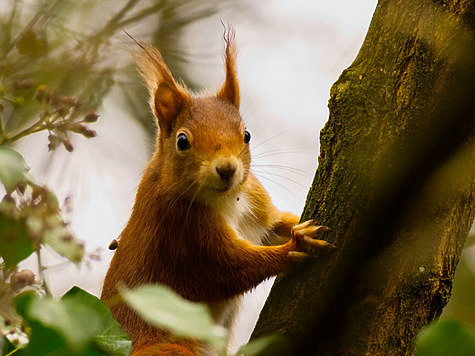

Прелестная особенность некоторых парков – в них живут веселые игривые белки. В отличие от лесных собратьев, пушистые грызуны-горожане обычно не прячутся от людей. Можно вблизи наблюдать за повадками умных непоседливых зверьков, любоваться их природной грацией, ловкостью, красотой зимних и летних шубок. Зверьки не откажутся от угощений, а самые смелые просто заберут лакомства из рук. Личное знакомство с милыми лесными жителями доставляет огромное удовольствие детям и взрослым.
В наших парках можно встретить следующие подвиды белки обыкновенной, или векши:
Если вы угощаете белку, то помните, что ей ни в коем случае нельзя давать орешки или семечки из магазина, где может быть соль или другие добавки и то, что белка всегда будет брать, сколько бы еды ей не дали, ведь она запаслива и умна .